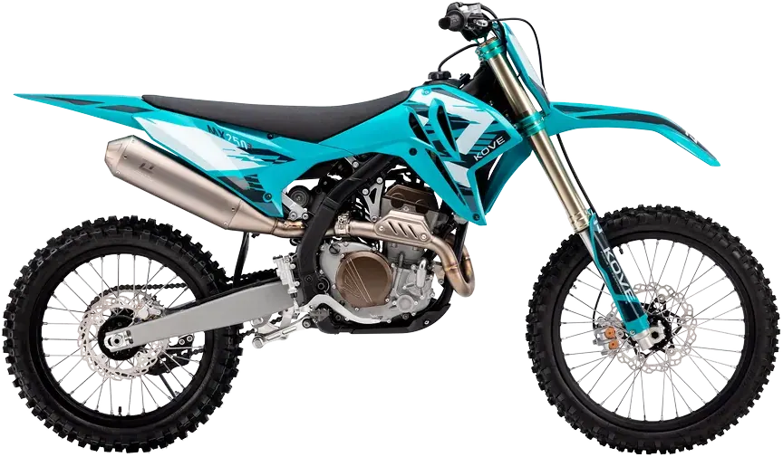
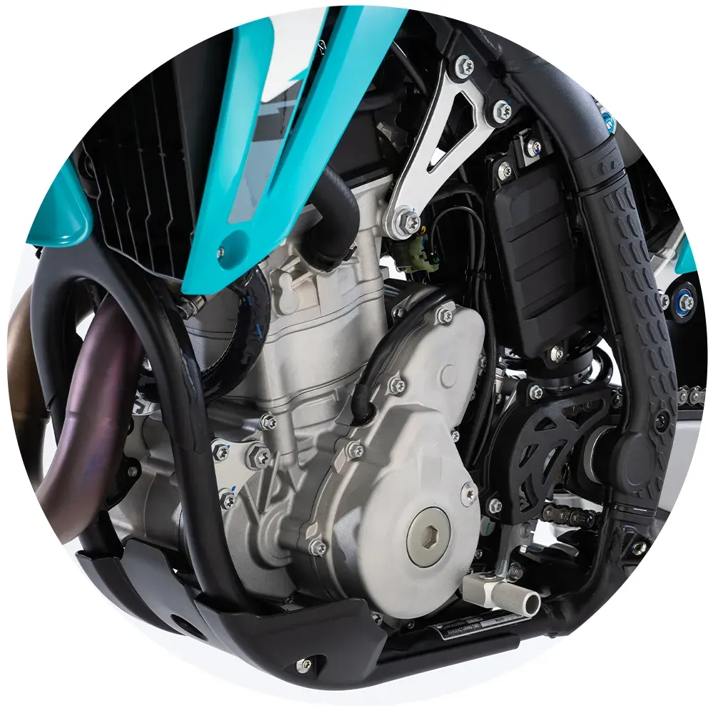
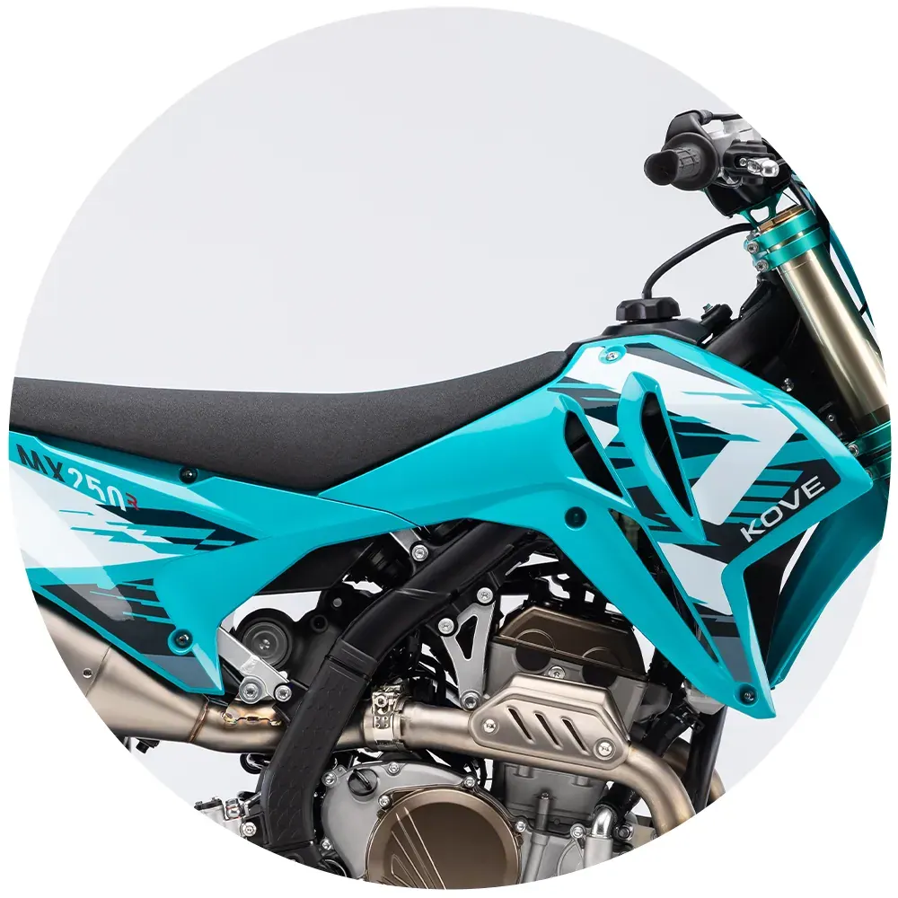
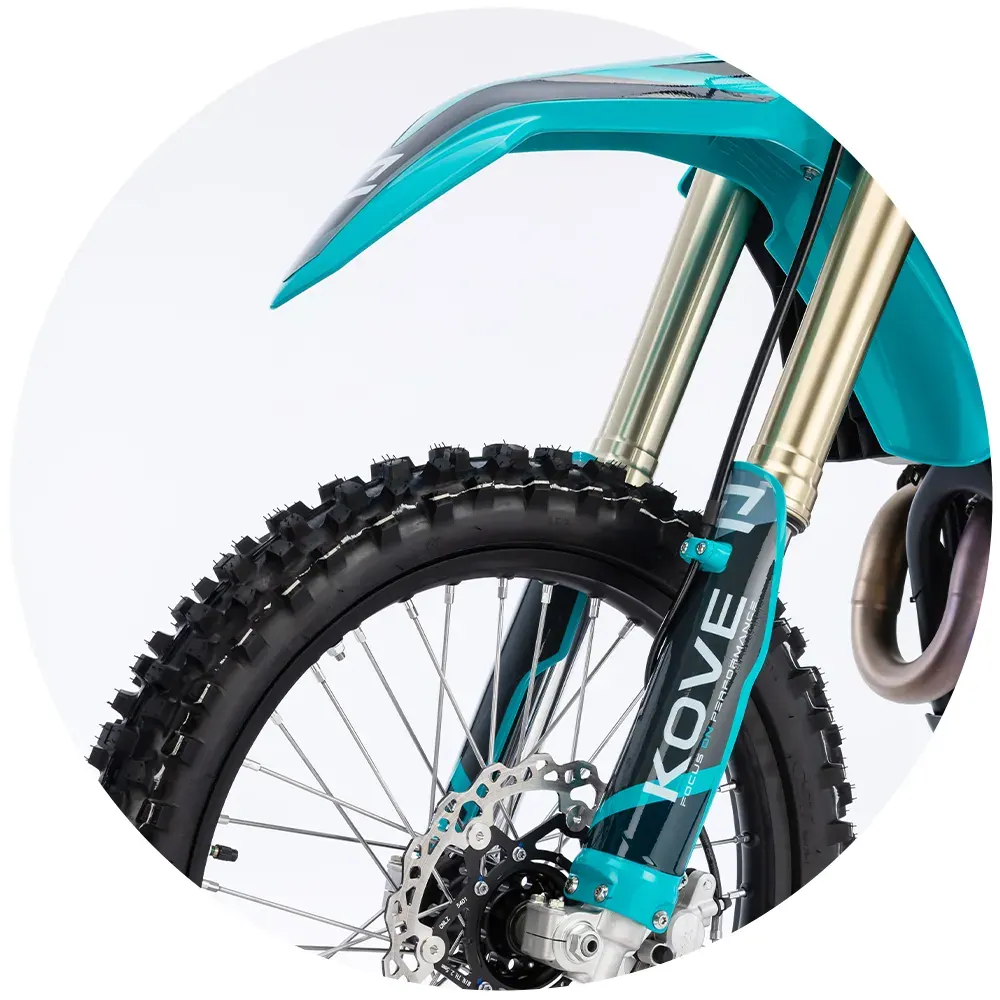
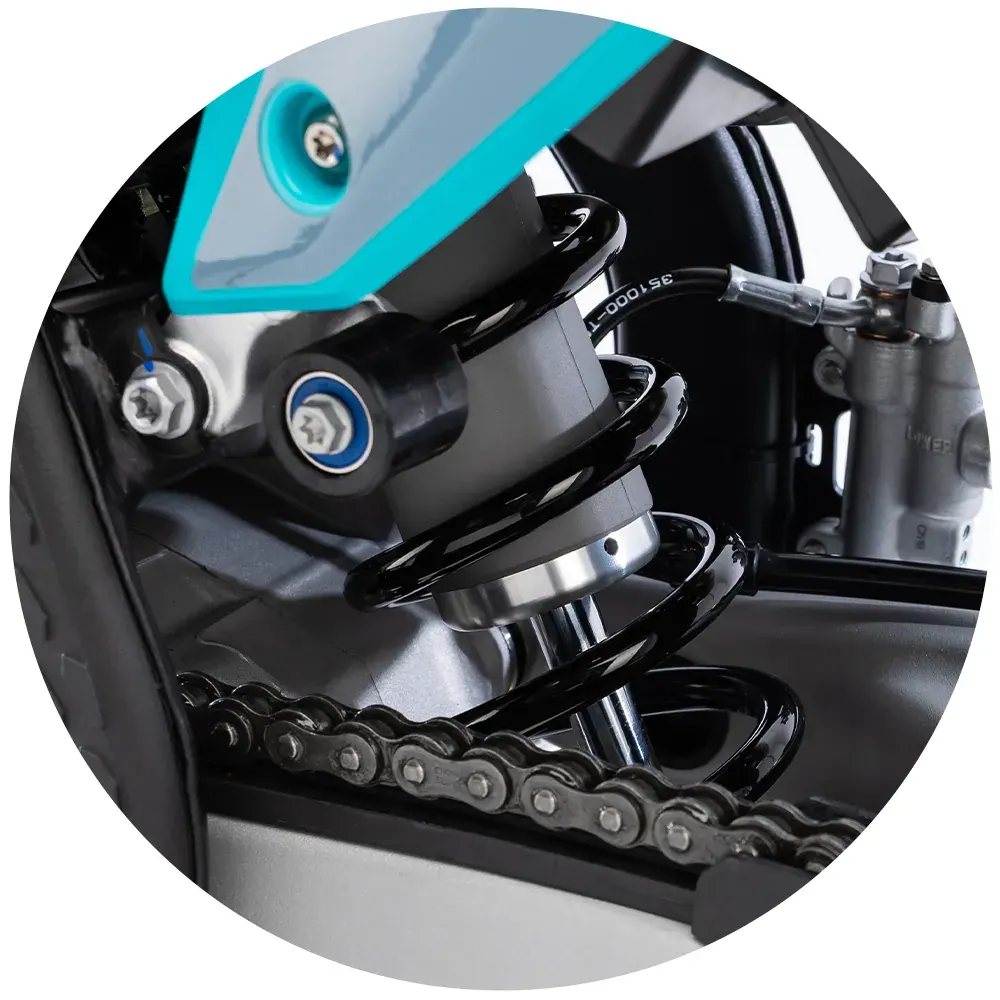

Macbor
Montana XR5 500
A2 500 cc · Enduro
Propuesta de OpsPilot para Expomoto Córdoba, en revisión. No es la web oficial: expomotocordoba.es
Inicio › Motos › Kove › MX 250

Kove
El terreno de juego empieza en el circuito
Precio y financiación: te los damos al momento por teléfono (pendientes de publicar en la web).




Una auténtica 250 de motocross diseñada para jugar en serio. Ligera, rígida y explosiva, combina una entrega de potencia afilada con una parte ciclo pensada para exprimir cada metro del circuito.
Motor monocilíndrico de 250 cc , DOHC , 4 válvulas , 4 tiempos y refrigeración líquida , con inyección electrónica EFI Bosch . Este propulsor desarrolla 41 CV a 12.000 rpm y un par máximo de 27 Nm a 9.500 rpm , ofreciendo una respuesta directa y consistente.
La relación de compresión de 13,9:1 y la configuración interna del motor permiten una combustión eficiente a alto régimen, con una entrega de potencia sólida en la zona media y un estiramiento final aprovechable. El resultado es un funcionamiento preciso y predecible, diseñado para mantener el rendimiento y facilitar un control exacto del acelerador en salidas de curva y zonas técnicas.
Con un peso en orden de marcha de 101 kg , la MX250 ofrece una base ligera y reactiva, clave para una conducción ágil en circuito. La distancia entre ejes de 1.490 mm equilibra estabilidad y rapidez en los cambios de apoyo, mientras que la altura del asiento de 960 mm define una posición de pilotaje orientada al control y al ataque. La altura libre al suelo de 340 mm asegura margen suficiente en saltos, roderas profundas y secciones técnicas.
El conjunto se apoya en un chasis de doble viga en acero de alta resistencia , combinado con un subchasis de aluminio , que aporta una rigidez estructural precisa, reduce el peso en la zona trasera y mejora la lectura del tren delantero en conducción exigente, especialmente relevante en una 250 4T
Equipa una horquilla invertida multirregulable , con ajustes independientes de precarga, compresión y extensión , diseñada para adaptarse a un uso intensivo. Con un recorrido de 303 mm , ofrece el equilibrio necesario entre absorción en impactos fuertes y estabilidad en apoyos rápidos, permitiendo un ajuste preciso según el peso del piloto y las características del circuito.
Su rango de regulación facilita afinar el comportamiento del tren delantero para maximizar el control en frenadas, entradas de curva y secciones técnicas, manteniendo un funcionamiento constante.
La suspensión trasera recurre a un monoamortiguador multirregulable , con ajustes de precarga, compresión y extensión , pensado para trabajar en conjunto con la geometría del chasis y ofrecer una respuesta equilibrada en aceleración y recepción de saltos.